Vanderbilt · Learning Series · ATD facilitator guide · print edition
| Screen | Full (min) | Core (min) |
|---|---|---|
| Welcome / QR | 3 | 2 |
| Objectives | 2 | 1 |
| Agenda | 1 | skip |
| 01 · The role and the stakes | 10 | 6 |
| Manifesto | 1 | skip |
| 02 · The core four | 16 | 12 |
| 03 · The foundations | 13 | 9 |
| 04 · Oracle first | 14 | 10 |
| 05 · Accountability and community | 12 | 8 |
| Recap quiz | 6 | 5 |
| Capstone · HCM commitment card | 7 | 5 |
| Glossary | 1 | skip |
| Closing · commitment | 4 | 2 |
| Total | 90 | 60 |
Business Unit HCMs, new and experienced, plus the managers and administrators who share their transactions. New HCMs get the playbook; veterans get the standard, the new Oracle-first model, and the accountability changes. 8 to 30 works well; the trainers scale to any room size with pair work and room votes. No prerequisites.
Projector + presenter device; learners on their own devices via the Welcome-slide QR; seating that allows pairs. Virtual: run trainers on shared screen with chat votes, breakouts of 2 for the pair activities. Useful to have handy: your unit's real payroll cutoff calendar (the Section 02 activity uses it) and printed checklists for anyone without a device.
If Projector or the site fails mid-session: Teach from the printed checklist: the core four, the same-day habit, the three flag-to-PCB triggers, and the where-to-go order all work on a whiteboard. The pair activities never needed a screen; the capstone moves to the printed card.
If Learner devices can't join (wifi/filters): Run facilitator-only: the trainers play well on the projector with the room voting A/B/C by hands; the capstone moves to paper (the printed card covers it). You lose typing, not learning.
If You're 10+ minutes behind by Section 03: Declare the Core path silently: debriefs shrink to one voice, pair work becomes 60-second solo drafts, and the cutoff-calendar check becomes homework. Never cut Call the Play, Spot the Concept, or the capstone; they carry the session's practice objectives.
If Someone brings up a live, specific payroll error or an individual employee's situation: Protect the person and the room: 'That one deserves real attention, not a room; catch me at the break and we will get it to the right partner.' Individual cases go to PCB privately, never to a training-room discussion. Park the pattern, not the person.
If The room turns the accountability section into a grievance session about workload: Honor it once, then redirect: 'That's real, and it is exactly what the survey and community are for; make it a work item.' Point at the support half of the section: the checklist, the community, the champion network, and the fact that the initiative sorts every flagged issue into a fix. Then move.
If A veteran HCM says their workarounds are faster than the new process: Don't argue speed; argue continuity and scale: 'Your workaround works because you're good. It strands the next HCM, and it disappears when you take a vacation.' Then recruit them: their workarounds are the best source of guardrail and job aid ideas in the room, and the champion network wants them.
Q: Is this dashboard-and-escalation model just surveillance of HCMs?
The dashboards measure the work, not the person: overdue approvals, late transactions, training completion. Every one of those has a payroll error or a compliance exposure on the other end of it, and the same dashboards make GOOD work visible for the first time. The design goal is fewer 5 pm fire drills, and the escalation path only ever activates after a reminder was already ignored. Act on the first reminder and the whole apparatus stays invisible.
Q: Why is training mandatory for HCMs when managers cause many of these errors too?
True, and the charter says so: many overpayments trace to HCM AND manager actions. Manager training is explicitly out of scope for this initiative, which is a scoping decision, not a verdict on who is at fault. HCMs are the through-point every transaction shares, so standardizing this role first prevents the most errors fastest. And an HCM who runs the playbook makes late managers visible instead of absorbing their delays quietly, which is how the manager side improves too.
Q: I've done this job for years without a checklist. Why now?
Because the job got bigger while nobody was looking: more transactions, more systems, and now three new states with their own laws. The $84,000 in five months was produced by experienced people in busy weeks, not by beginners. The checklist is not a verdict on anyone's competence; it is what lets competence survive volume, vacations, and turnover. Pilots use them for the same reason.
Q: What if Oracle's job aid is wrong or missing when I check it?
Then you have found real work, and there is a channel for it: Academy content sits under formal governance with defined ownership and a review cadence, and flagged content gets corrected for every HCM after you. In the moment, escalate the question to PCB rather than guessing. What ends is the era of silently working around a bad job aid; that silence is how they stayed bad.
Q: Am I supposed to be the FLSA expert for my unit now?
The opposite. The bar is recognize and route: hear the overtime question, the custom-title request, or the out-of-state move inside an ordinary-sounding request, and flag it to PCB's specialists before processing. You are the tripwire, never the lawyer. The dangerous HCM is not the one who does not know an answer; it is the one who guesses one.
Q: The manager won't approve timecards no matter how much I nudge. How is that my problem?
It is not your fault, and it is still your play: run the backup approval process before the deadline, and let the escalation and dashboard system do what it was built for, which is making the delay visible to someone with authority over that manager. What ends is the version where you personally absorb the chasing forever and the pattern stays invisible. The system is designed to move that weight off you.
Pre-work invite (paste into the calendar invite)
Subject: Before our HCM Essentials session. Two things to bring: your unit's payroll cutoff and approval deadline calendar (or know where to find it), and one recurring HCM task that keeps slipping in your world. That's it, no reading and no assessment. We will spend the session on the real mechanics of the role: timecards, transactions, terminations, leave, and the new Oracle-first model, and you will leave with one committed working habit.
7-day pulse (send one week after)
Subject: One week later, did the first rep happen? Three quick lines, reply whenever: 1) Did you run the habit from your commitment card for real? 2) What did NOT become a fire drill? 3) Did you submit your survey line about the most confusing process? Replies come to me only. Not yet? The card still works; this note is your nudge.
Post-cycle re-poll (send after one full payroll cycle)
Subject: One payroll cycle with the new habit. Two questions, same scale as the room: 1) Fist to five, how confident are you now running the core four on time? 2) How did this cycle actually go: timecards approved before the deadline, changes entered same-day, anything escalated? Reply with a number and a line. The before-and-after pair is how we know the session did more than feel good.
Seven days out, send the pulse: 'Did you run the first rep of your habit? What did NOT become a fire drill? Did you submit your survey line?' After one full payroll cycle, send the re-poll: the same fist-to-five confidence question from the close, plus 'how many of your unit's timecards were approved before the deadline this cycle?' The count of completed first reps and submitted survey lines is the program's headline Level 3 metric.
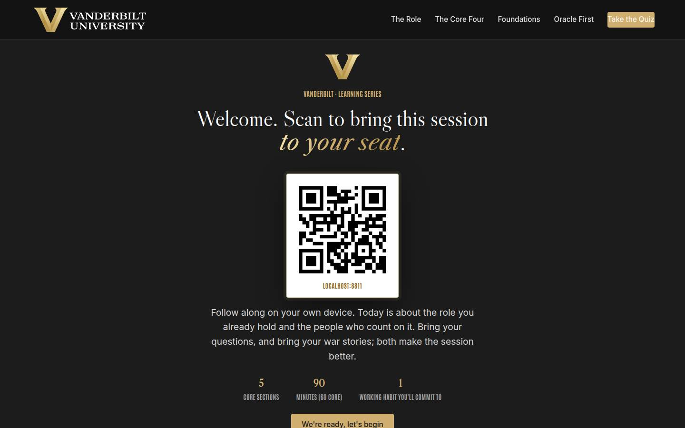
Get every learner into the experience on their own device and frame the session as respect for a role that finally gets a standard, never as remediation.
Say
“Welcome. Point your camera at that code before we start. Today is about the role you already hold: the HCM role, the person every hire, timecard, and termination in your unit flows through. Here's my promise for the next ninety minutes: no lecture about doing better. This is the playbook the role should have had years ago, and you are the first group to get it.”
Do
Ask
“Quick calibration, shout it out: when you took on HCM duties, how much formal training came with the role?”
Expect:
Respond: Name it warmly: 'That is the actual problem this initiative fixes. Not you; the missing playbook. Hold that thought, because the first section shows what the missing playbook has been costing.'
Validate: 80%+ of the room has the deck open on a device; the room's posture is curious, not defensive.
Watch for: Veterans bracing for a lecture about doing their jobs wrong. Defuse it in the first minute: the problems in this session were produced by good people working without a standard, and today is the standard arriving.
Transition: “Here's exactly what you'll walk out able to do.”
Core path: Core: one scan prompt, one framing line, move on.
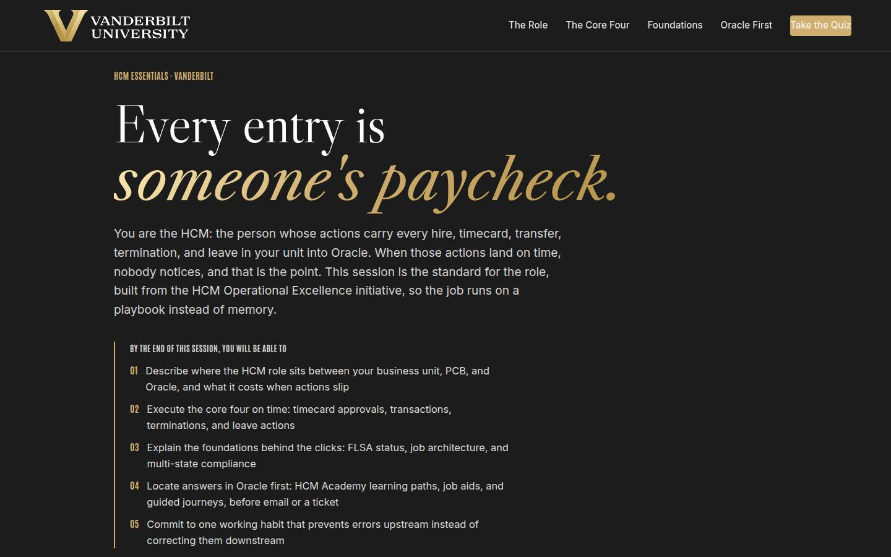
Set the contract: five capabilities, ending in one committed working habit with a date on it.
Say
“Five things by the end: you'll know exactly where this role sits and what it costs when it slips. You'll run the core four, timecards, transactions, terminations, and leave, on time and under pressure. You'll recognize when an ordinary request is secretly an FLSA, classification, or state-law question, and route it instead of guessing. You'll go Oracle first and know why that habit pays you back. And you'll leave with one working habit committed to one real task, with a date on it.”
Do
Validate: Learners can say what the capstone will be (one habit aimed at one slipping task, dated).
Watch for: Don't teach the objectives; each has its own section. Read and move.
Transition: “Five sections, in the order the work actually happens.”
Core path: Core: objectives 2 and 5 out loud; the rest on screen.
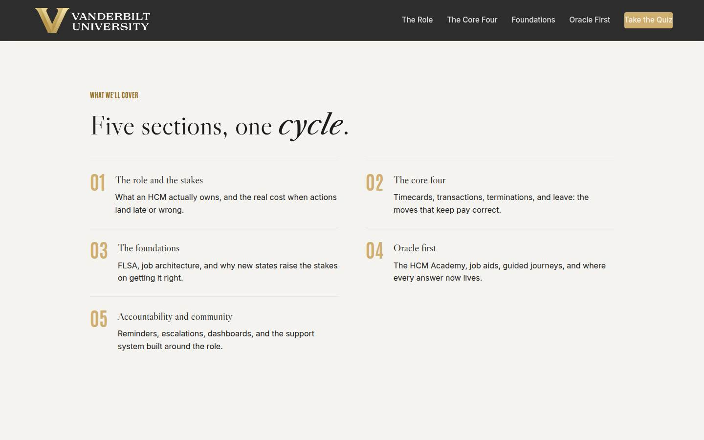
Show the arc once so learners can place each section: the stakes, the work, the knowledge, the tools, the system around it all.
Say
“The arc is simple: first the stakes, then the four moves that are the actual job, then the knowledge that tells you when to slow down, then where every answer now lives, and finally the accountability and support system being built around the role.”
Do
Validate: None needed; this is orientation.
Watch for: Don't teach here; every concept has its own slide.
Transition: “Start with the stakes, because they have a dollar figure.”
Core path: Core: skip entirely; the deck's structure carries it.
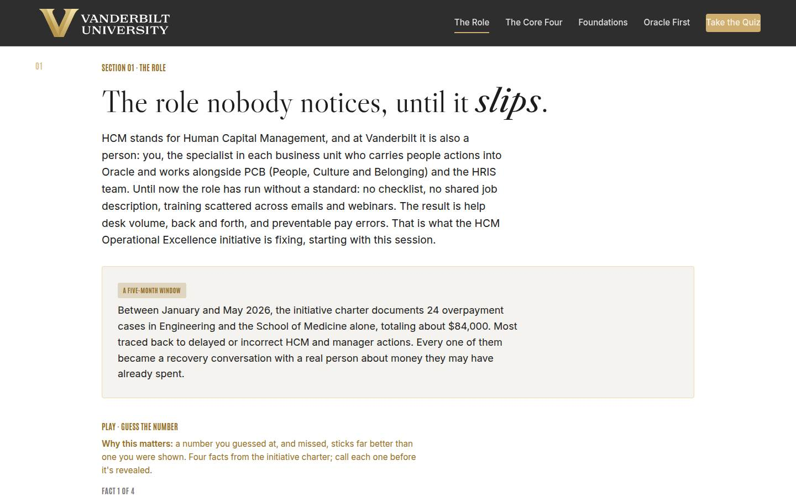
Define the HCM role precisely (the bridge between the unit, PCB, and Oracle), land the $84,000 story, and install the upstream-beats-downstream frame the whole initiative rests on.
Say
“HCM stands for Human Capital Management, and at Vanderbilt it is also a person: you. Every hire, timecard, transfer, termination, and leave in your unit reaches Oracle through your hands, with PCB and HRIS as your partners. When it works, nobody notices, and that is the point. Here is what it looks like when it slips: between January and May of 2026, in just two units, twenty-four documented overpayment cases totaling about eighty-four thousand dollars. Most traced back to delayed or incorrect HCM and manager actions. The word that matters in that sentence is preventable. Let's see how well you can guess the rest of the numbers.”
Do
Ask
“Think about the last pay error you saw up close, any unit, any year. Was the root cause missing knowledge, or missed timing?”
Expect:
Respond: Count the split out loud and land it: 'Mostly timing, which is the best possible news, because timing is a habit, and habits are exactly what today builds. And for the waiting-on-a-manager cases: Section 05 is about the escalation system that stops you from absorbing that wait alone.'
Debrief: The role is the bridge; the errors are mostly timing; timing is trainable. And every error is cheapest before it enters Oracle, which is why everything today pushes the work upstream.
Validate: Quick check correct (upstream); every learner has named two slipping tasks and sorted them; the room's sort visibly lands on timing.
Watch for: Defensiveness about the overpayment story, especially from the named units. The frame that lands: these were produced by good people in busy weeks without a standard, and the units in the charter are simply where someone counted.
Transition: “Before the four moves, one sentence to keep for the whole session.”
Core path: Core: story told fast, Guess the Number as a room vote, quick check stays, pair activity becomes 60 seconds of solo writing.
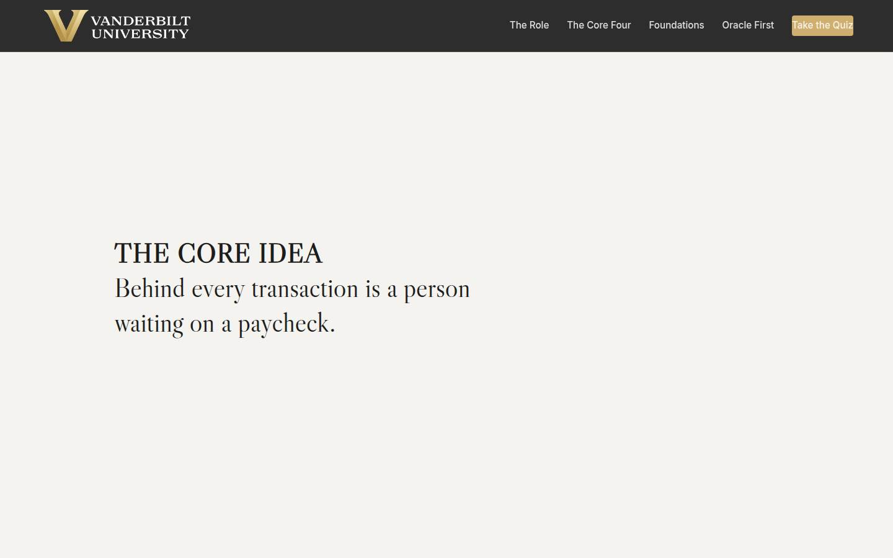
One beat of stillness to lock the session's core idea: the human being on the other end of every transaction.
Say
“Behind every transaction is a person waiting on a paycheck.”
Do
Validate: None; this is pacing.
Watch for: The urge to talk over it. Don't.
Transition: “Everything in the next section protects that person. Here are the four moves.”
Core path: Core: skip; say the line yourself as you pass it.
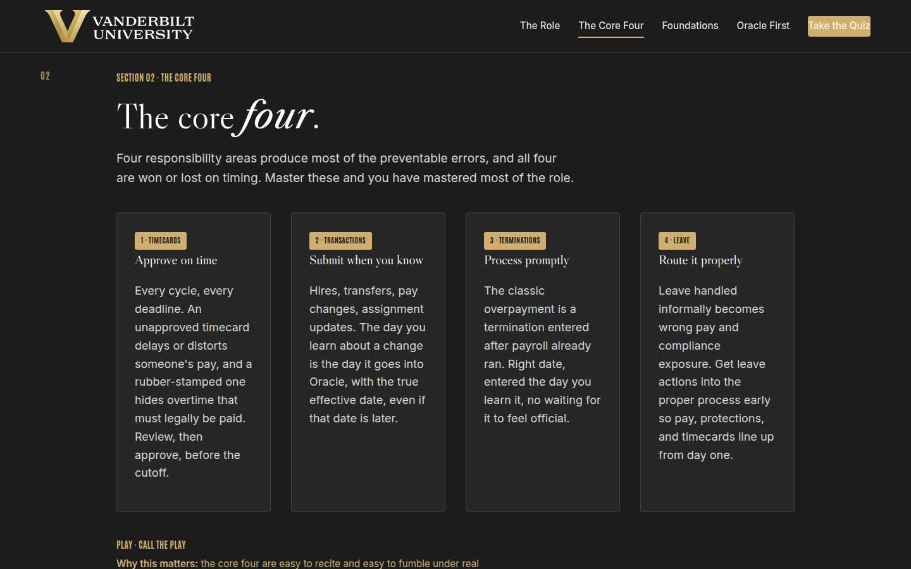
Install the four responsibility areas (timecards, transactions, terminations, leave) with their timing rules, drill them under realistic conditions in Call the Play, and land the same-day habit as the session's central behavior.
Say
“Four areas produce most of the preventable errors, and all four are won or lost on timing. Timecards: review and approve before the cutoff, every cycle, and actually review, because an unapproved timecard delays pay and a rubber-stamped one can hide overtime someone is legally owed. Transactions: hires, transfers, pay changes, the day you learn about a change is the day it goes into Oracle, carrying its true effective date. Terminations: the classic overpayment is a termination entered after payroll ran; enter it the day you learn it. And leave: leave handled informally becomes wrong pay and compliance exposure, so it goes into the proper process early. Five scenarios; let's see you run them under game conditions.”
Do
Ask
“After the trainer: which scenario did you hesitate on, and what was the pull toward the wrong answer?”
Expect:
Respond: Take each pull seriously and give the counter: the backup process exists for the traveling manager; official-ness is what the paperwork confirms after the entry protects the paycheck; and the true effective date is honesty the system is built to handle. The hesitations are the habit's real enemies; naming them here is the inoculation.
Debrief: Four areas, one rule underneath: act the day you know, and let effective dates carry the timing. Your calendar now has the deadlines on it; the habit has a scaffold.
Validate: 4+ of 5 on Call the Play for most of the room; every learner has checked their deadline knowledge against the real calendar and set at least one recurring reminder.
Watch for: The 'to be safe, I wait' instinct, especially on terminations and retroactive changes. Correct it every time it surfaces: waiting is the unsafe move; the effective date is how Oracle carries timing safely.
Transition: “Those are the moves. Next: the knowledge that tells you when a routine request is not routine.”
Core path: Core: cards fast, trainer stays at full length (it carries objective 2), calendar activity becomes homework announced from the front. Never cut the trainer.
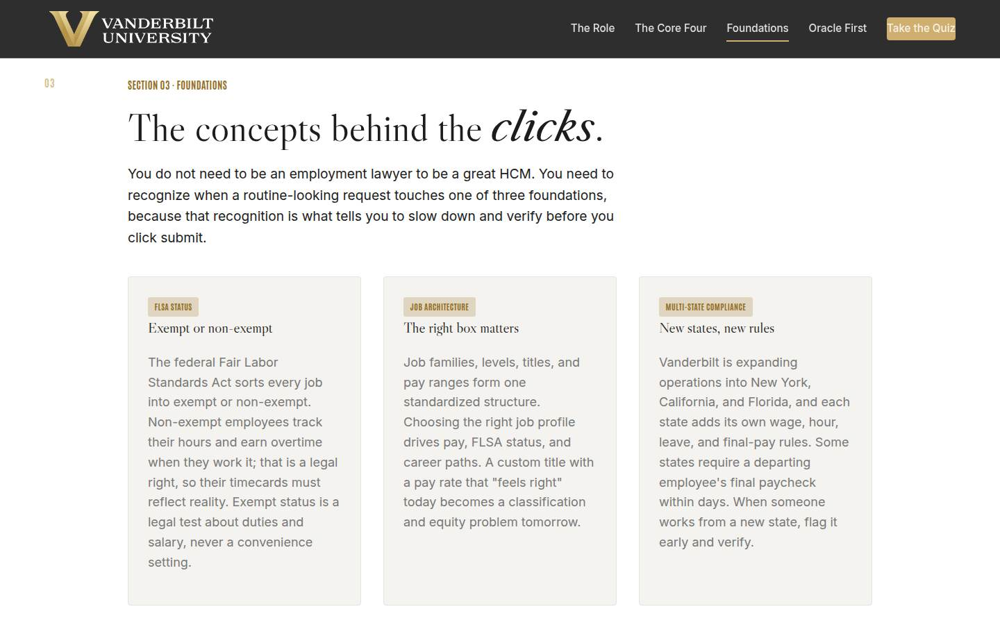
Install the three recognition triggers (FLSA, job architecture, multi-state) so learners flag and route instead of guessing, and drill the ear in Spot the Concept plus the flag-it reply in pairs.
Say
“You do not need to be an employment lawyer to be a great HCM, and today does not try to make you one. What you need is an ear for three foundations hiding inside ordinary requests. FLSA: the federal law that makes a non-exempt employee's hours and overtime a legal right, which is why a timecard must reflect reality and why hourly-versus-salaried is never a convenience decision. Job architecture: titles, levels, and pay ranges come from one structure, so a custom title that feels right today is an equity problem tomorrow. And the states: Vanderbilt is expanding into New York, California, and Florida, and each brings its own wage, hour, leave, and final-pay rules, so a quiet remote move is never just a change of address. When you hear any of the three: slow down, flag it, route it to PCB. Five requests; find the foundation in each.”
Do
Ask
“What makes the polite requests, the 'can we just' ones, more dangerous than the obviously complicated ones?”
Expect:
Respond: All three, and name the reframe: routing IS the helpful answer. 'Yes, and let me get classification to confirm so it sticks' serves the manager better than a fast yes that unravels in an audit. The flag-it reply you just practiced is a service, never an obstacle.
Debrief: Three triggers, one move: recognize and route. The dangerous HCM is never the one who does not know an answer; it is the one who guesses one.
Validate: 4+ of 5 on Spot the Concept; every learner has said a flag-it reply out loud once and it was helpful in tone, firm on routing.
Watch for: Learners trying to actually litigate FLSA rules in the room ('but what if the duties are…'). Redirect every time: the win is recognizing the question, not answering it. PCB's specialists answer it; that is the whole design.
Transition: “So where do the answers actually live now? One place, and that is new.”
Core path: Core: cards in one line each, trainer stays at full length (it carries objective 3), pair practice becomes each person writing their flag-it reply in 60 seconds.
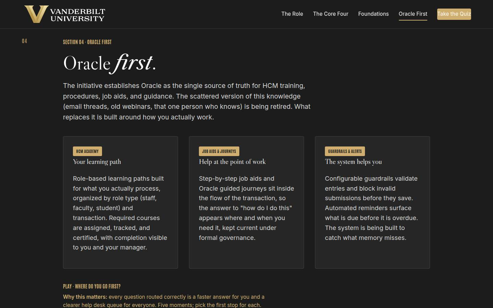
Establish Oracle as the single source of truth (Academy, job aids, journeys, guardrails), install the Oracle-first routing habit via the trainer, and recruit the room's expertise into the guardrail pipeline.
Say
“Here is the structural change: Oracle becomes the single source of truth for HCM training, procedures, and job aids. The scattered version, the email from 2023, the webinar someone half remembers, the one person who knows, is being retired, because knowledge that lives in one person retires when they do. What replaces it is built around how you work: the HCM Academy with role-based learning paths, tracked to completion. Job aids and guided journeys inside the transaction, at the point of work. And guardrails, Oracle configured to block invalid entries before they save, plus reminders that surface work before it is overdue. The habit that makes it all pay: Oracle first. How-do-I questions go to the job aid. Judgment questions go to the community. Broken things go to the help desk. Five moments; route them.”
Do
Ask
“The brainstorm: name one entry mistake Oracle should make impossible. What exactly should it block?”
Expect:
Respond: Write every candidate down and tell them where it goes: 'This list goes to the project team; guardrail decisions are being made right now, and this room knows better than anyone where the sharp edges are.' Then keep the promise and send the list.
Debrief: One source of truth, three routes, and a system being configured to catch what memory misses. Your part is the first habit: check Oracle before you email, ticket, or guess.
Validate: 4+ of 5 on the trainer; the whiteboard has at least three specific guardrail candidates worth forwarding to the project team.
Watch for: Cynicism from anyone burned by an outdated job aid before. Honor it and point at governance: content now has owners and a review cadence, and the feedback channel is how bad content dies. Their skepticism, routed through that channel, is literally the maintenance system working.
Transition: “One question left: what happens if the work does NOT get done on time? That system changed too, and you should hear it from me plainly.”
Core path: Core: cards fast, trainer stays, quick check stays, brainstorm shrinks to one round-robin candidate per pair with no discussion.
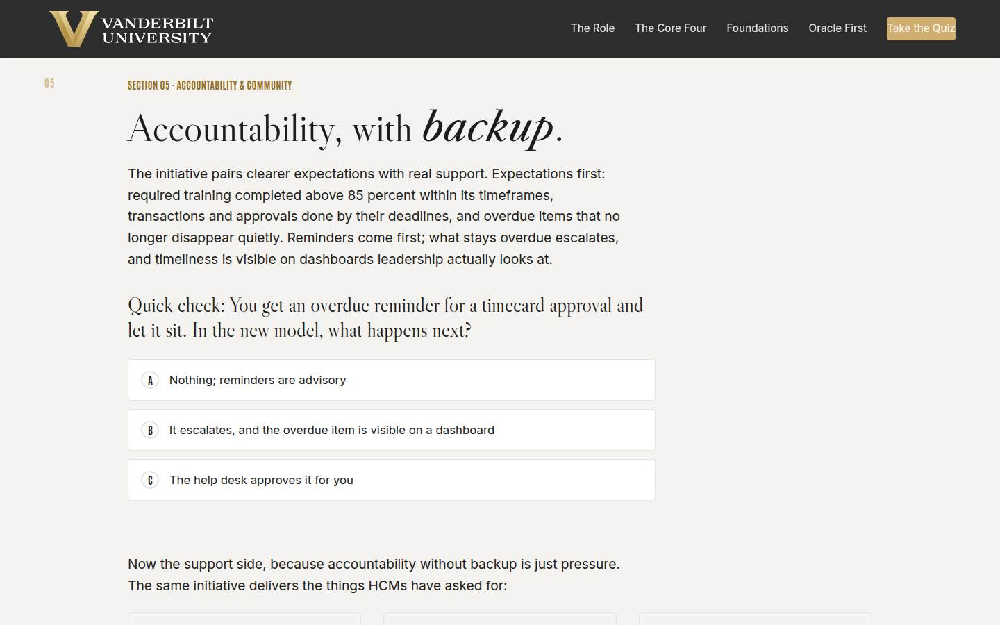
Deliver the accountability model straight (reminders, escalation, dashboards, the 85 percent bar) framed as visibility rather than surveillance, then land the support half: checklist, community, surveys, champions.
Say
“Let me give you the accountability model with no spin, because you deserve to hear it plainly. Required training completion above 85 percent, within the timeframes, tracked in Oracle. Transactions and approvals by their deadlines. And overdue items no longer disappear quietly: a reminder comes first, what stays overdue escalates, and timeliness is visible on dashboards leadership actually looks at. Now the other half, because accountability without backup is just pressure. The same initiative gives this role, for the first time, a standardized checklist and job description, so expectations are written down instead of discovered. A real HCM community, because you asked for one. And surveys plus a champion network, which means the people who feel these processes daily are the ones steering what gets fixed. Both halves are the same idea: the role finally gets taken seriously.”
Do
Ask
“Honest temperature check: does the reminder-escalation-dashboard model land as support or as surveillance, and what would tip it toward support?”
Expect:
Respond: Take the manager-visibility point and confirm it: the escalation path exists precisely so a manager's delay becomes their leadership's problem instead of your silent burden. For the surveillance worry: the metrics measure the work, and every metric has a payroll error on the other end. And yes, accuracy matters, which is what the feedback channel is for.
Debrief: Clear expectations, visible timeliness, and real support: a defined role, a community, and a voice into what gets built. Act on the first reminder and the whole apparatus stays boring, which is the goal.
Validate: Both quick checks correct; every learner has drafted one specific survey line naming a process and its fix type.
Watch for: The section tipping into grievance about workload or managers. One honoring sentence, then convert it: the survey line is where grievances become work items, and the escalation system is what stops HCMs from absorbing other people's delays silently.
Transition: “That's the whole system. Quiz first, then the card that turns today into a habit.”
Core path: Core: expectations and first quick check stay, support cards in one line each, survey-line draft shrinks to 60 silent seconds with no read-alouds.
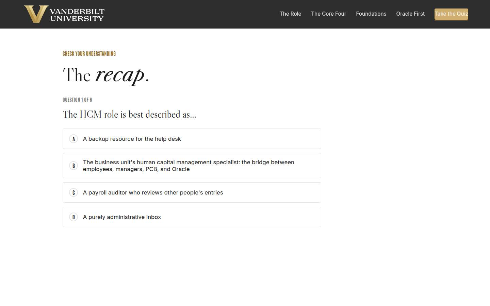
Score the session's knowledge against the five objectives before the capstone applies it (Kirkpatrick Level 2).
Say
“Six questions, one per big idea: the role, the core four, the habit, the law, the routing, and the accountability model. This is the systems check before you write the card that leaves the room with you.”
Do
Validate: Room mode at 5/6 or better. The quiz maps onto the objectives, so misses tell you exactly what to reteach.
Watch for: Racing. Frame it as the systems check before the commitment, not a race.
Transition: “Now the only part of today that changes anything.”
Core path: Core: keep at full length; this is the objectives' evidence.
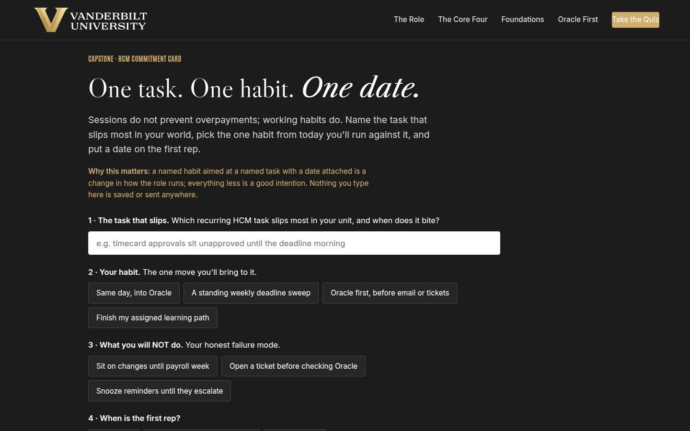
Convert the session into one dated behavioral commitment: one slipping task, one habit, one named failure mode, one date. The transfer artifact and the Level 3 seed.
Say
“Sessions do not prevent overpayments; working habits do. Name the task that actually slips in your unit, the one you wrote down in Section 01. Pick the ONE habit from today you will run against it: same-day entry, the standing weekly sweep, Oracle first, or finishing your learning path. Then the honest field: what you will NOT do, because you know your failure mode. And a date on the first rep. A named habit aimed at a named task with a date attached changes how the role runs. Everything less is a good intention.”
Do
Ask
“What's most likely to make you skip the first rep, and what's your plan for that obstacle?”
Expect:
Respond: Busy week: 'that's why the habit is small; same-day entry costs minutes, recovery costs weeks.' Other people: 'your play is the nudge plus the backup process; the escalation system carries the rest.' Forgetting: 'attach it to the calendar right now; the sweep and the reminders exist so memory is never the system.'
Debrief: One payroll cycle is about to run with a different habit in it. That's how the $84,000 number goes down: one HCM, one habit, one cycle at a time.
Validate: Every learner builds a card (all four fields). The card plus the 7-day pulse plus the post-cycle re-poll is the evidence chain.
Watch for: Vague tasks ('being more on top of things'): push to ONE named recurring task and when it bites. And habit-shopping: the right habit is the one aimed at their slipping task, not the one that sounds most impressive.
Transition: “Reference shelf in one breath, and then the send-off.”
Core path: Core: protect at full length; never cut the capstone.
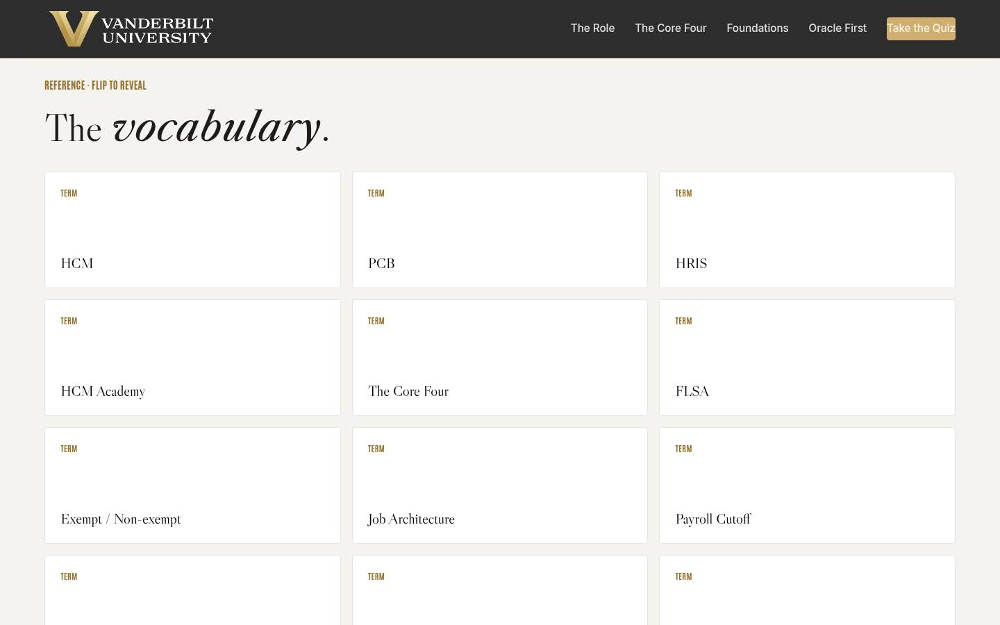
Signpost the reference layer; it lives here for after the session.
Say
“Every term from today lives here as flip cards, from FLSA to guardrail, for the day a manager uses one in a meeting and you want the one-line version back.”
Do
Validate: None; reference material.
Watch for: Don't tour all thirteen cards; one flip makes the point.
Transition: “Last slide. One rep left.”
Core path: Core: skip; point at it verbally from the closing slide.
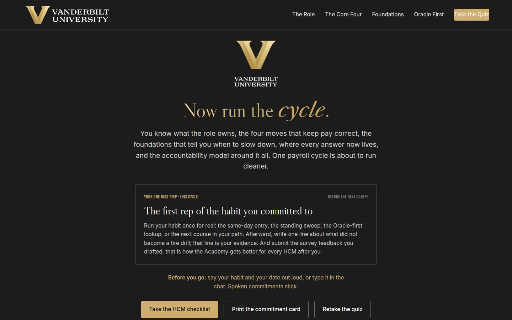
Convert cards into spoken commitments, capture the Level 1 reaction check, and point at the follow-up chain.
Say
“The whole session in one breath: the role is the bridge, and the errors are mostly timing. The core four run on one rule: act the day you know, and let effective dates carry the rest. When a request touches overtime, titles, or state lines, you recognize and route. Answers live in Oracle first. And the system around you now makes on-time visible and overdue impossible to ignore, while giving you a checklist, a community, and a voice. You have a card. Before you go: your habit, and your date. Say it out loud; spoken commitments stick.”
Do
Ask
“Around the room, one line each: your habit, and your date.”
Expect:
Respond: Thank each one, no commentary. For anyone who names a date past the next cutoff, warmly: 'Pull it inside the cutoff if you can; the habit only counts when a real cycle runs through it.'
Debrief: The session's success metric isn't in this room; it's the next payroll cycle: timecards approved before the deadline, changes entered same-day, and one survey line submitted per person.
Validate: Fist-to-five mostly 3+ (Level 1); a majority state a habit-and-date out loud or in chat. Count both; with the pulse and the post-cycle re-poll, that's your evidence chain.
Watch for: Cards that quietly skipped the date. The commitment round catches them: no date, no commitment; help them pick one on the spot.
Transition: “Go run the cycle. And when the first reminder arrives this week, act on it the same day; that is the whole system working, and it started with you.”
Core path: Core: fist-to-five plus a fast commitment round; the ending survives every cut.
Generated from facilitator/notes.json. The on-screen facilitator edition lives at ./ alongside this guide.